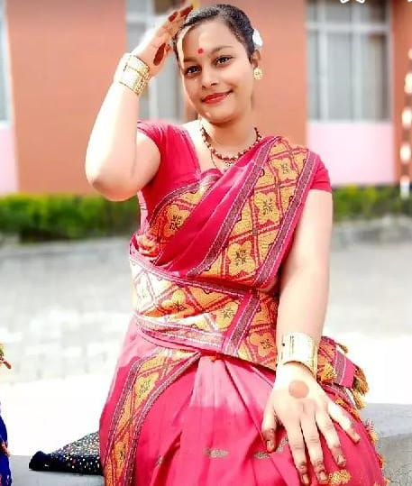
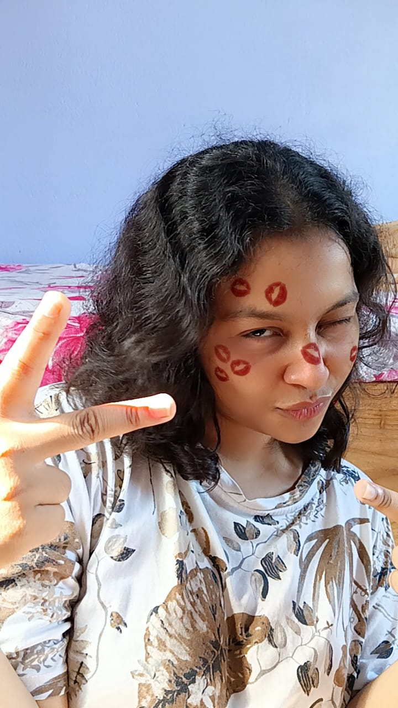
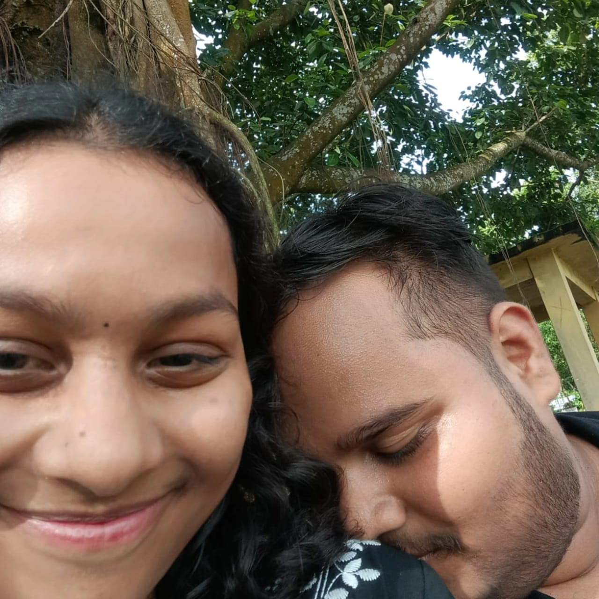
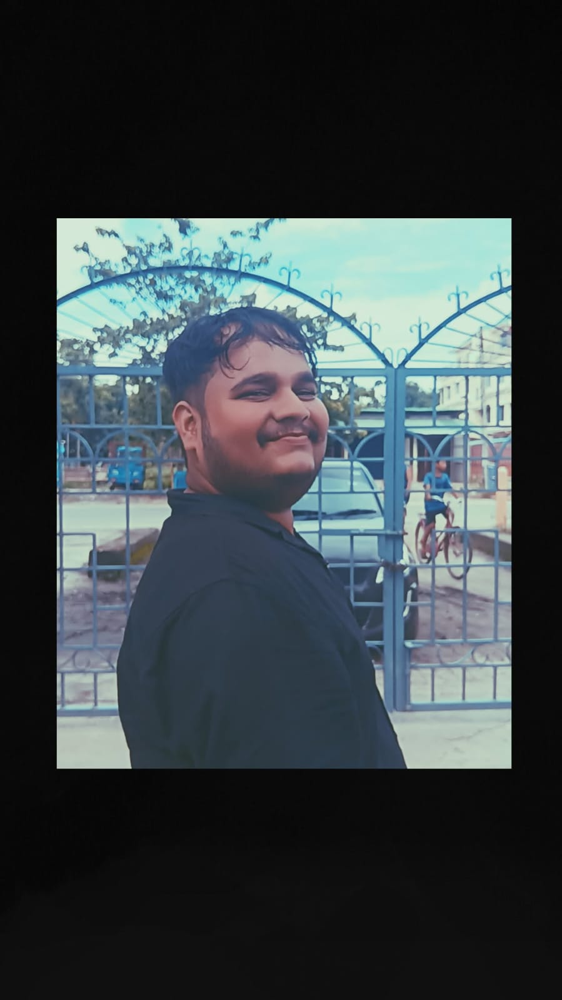
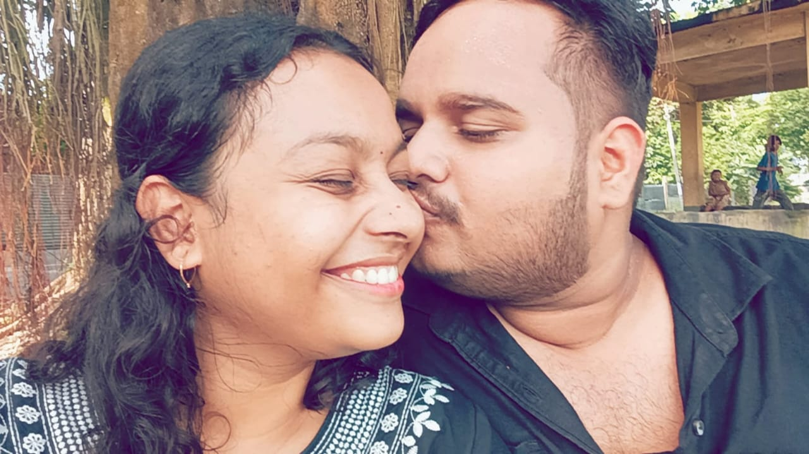
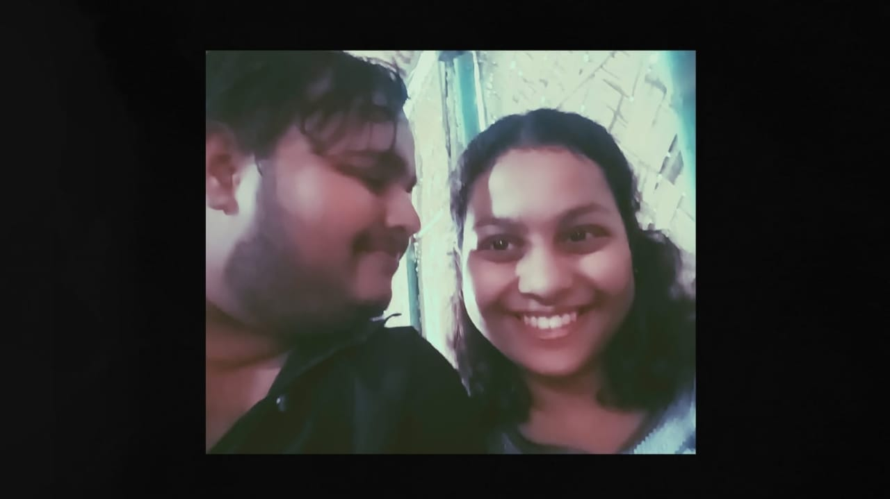
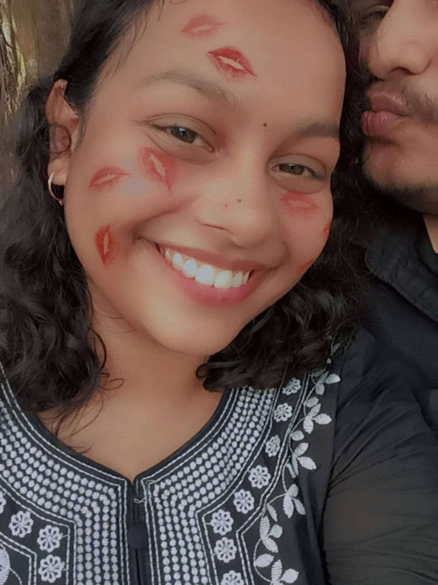
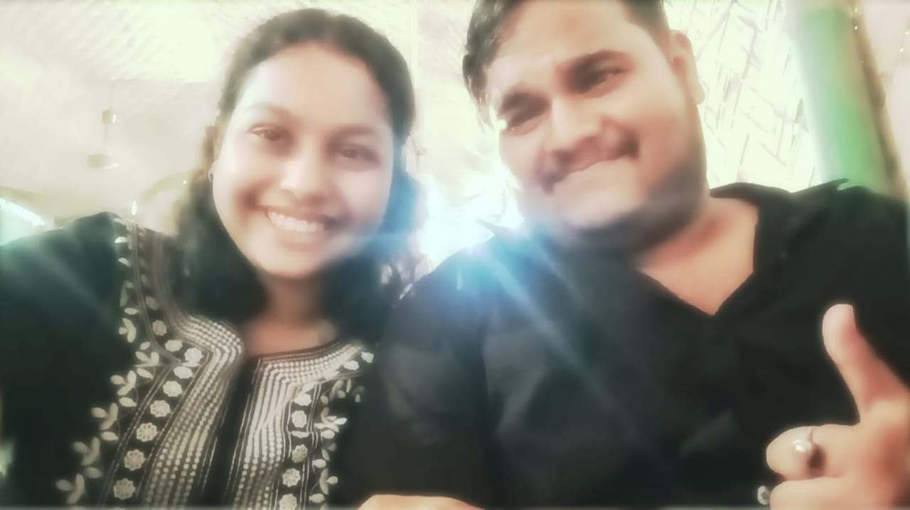

📖 The Love Story of Mr. & Mrs. Kasundi
In the quiet corridors of his school life, long before he realized how drastically his heart could change, Mr. Kasundi’s life took a turn in a single, unexpected moment.
It wasn’t a grand meeting. There were no fireworks in the sky, no cinematic slow motion. It was simpler than that — almost unreal in its simplicity.
One lazy afternoon, his friend Naksh was scrolling through his phone. Mr. Kasundi, not particularly paying attention, caught a fleeting glimpse of a photograph. Her photograph.
For a moment, the world fell silent. His gaze fixed on her face — Mrs. Kasundi, though she wasn’t his yet. Her eyes had a kind of light he couldn’t explain, her smile was just… different. It was as though the picture itself spoke.
He didn’t know her. He didn’t even know her name. But his heart had already whispered the truth: This is her. This is the one.
🌸 The Silent Years & The Growing Bond
Days turned into months, and although they were connected through a thread of mutual acquaintances, Mr. Kasundi stayed silent. His nature was quieter, more observant — the type who would rather listen than talk. Mrs. Kasundi, on the other hand, was the complete opposite — vibrant, lively, full of words and life.
They crossed paths in small ways, conversations started, little interactions began to weave into something meaningful. He started noticing the little things about her — how she laughed with her whole heart, how she spoke about the world with passion, how she made everyone around her feel warm and alive.
Over time, their conversations became their own world. What started as small talk grew into late-night calls, endless teasing, and their famous playful arguments over “Who loves whom more.”
💌 The Confessions & The First Steps of Love
It wasn’t sudden when they confessed their love — but it also wasn’t delayed. It came naturally, like rain after a long summer. By the time he told her, both of them knew it already.
She teased him about being quiet and overthinking everything.
He teased her about talking non-stop.
The names came next — her calling him Gunda, kharoos, idiot; him calling her Gundi, chota Kasturi, gadha. And beneath all the jokes, their bond deepened in ways only they understood.
❤️ The Firsts That Defined Them
The awkward hug on June 24, 2025 — a moment that was shy, nervous, but unforgettable.
Their first lip kiss — a soft, hesitant promise of forever.
Their first French kiss & make-out — moments filled with passion, but also deep emotion, the kind that made them sure this wasn’t just attraction; it was home.
Forehead kisses over the phone — their signature way of saying “I’m here, always.”
⚡ The Fights, The Misunderstandings & The Strength
Like any great love story, theirs had storms. Misunderstandings came like uninvited guests. Sometimes it hurt, sometimes it felt like the world was tilting.
But here’s what made them different: every misunderstanding was followed by re-understanding. They learned each other more deeply with every fight. Every time they drifted apart, they found their way back — stronger, more certain that this was forever.
💍 The Proposal & The Engagement
By now, Mr. Kasundi was sure — there was no other ending to this story except marriage. On February 14th, under the guise of a normal day, he surprised her with his heart in his hands.
She laughed, cried, teased him, called him pagal, but her eyes sparkled with the same certainty he had felt since the first time he saw her picture.
They got engaged that day.
💒 The Marriage — Mr. & Mrs. Kasundi Forever
From that moment, it was only a countdown to the day they would become officially Mr. & Mrs. Kasundi.
Their wedding wasn’t just an event; it was the celebration of a journey — from a picture on a phone screen to holding hands at the altar. Every inside joke, every fight, every forehead kiss, every playful “I love you more” had led to this moment.
As they stood together, husband and wife, Mr. Kasundi looked at her and thought about the boy who once saw her picture and fell in love without knowing her name.
Now, she wasn’t just a picture.
She was his life, his wife, his soulmate, his forever koala. ❤️







